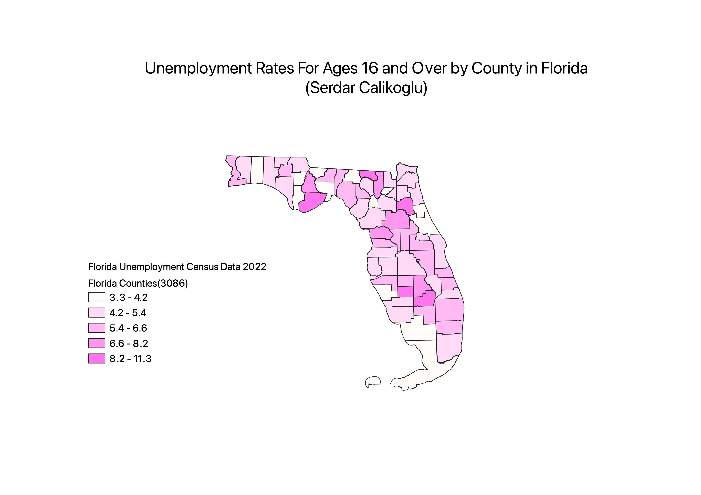

Homework 6: Census data choropleth
Serdar Calikoglu
My map tracks the unemployment rates for ages 16+ by county in Florida. We can see that unemployment rates tend to be higher in central Florida. Otherwise,the rates vary quite a bite from county to county.

Data used for this project
CSV dataset
Link to shapefile